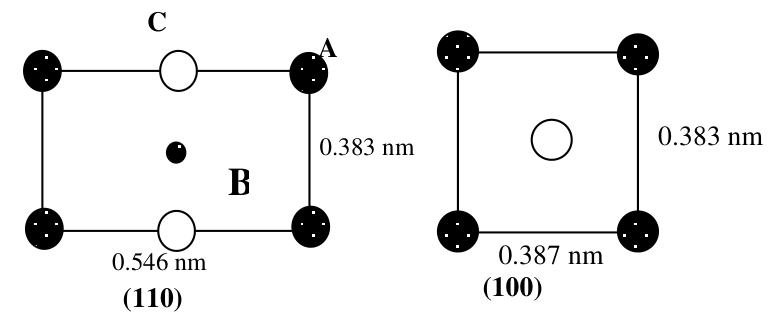
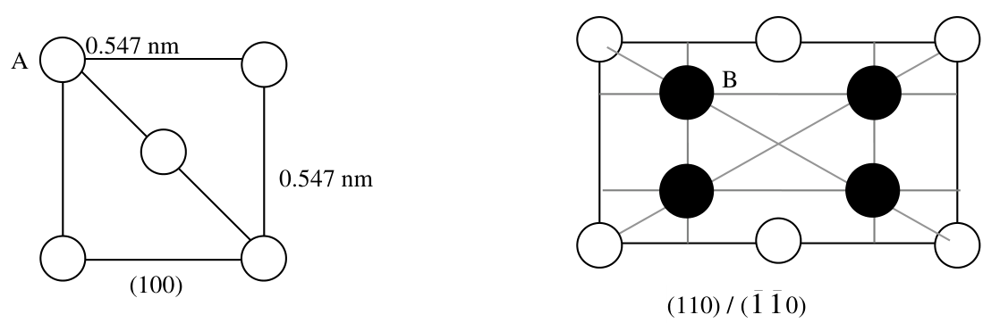
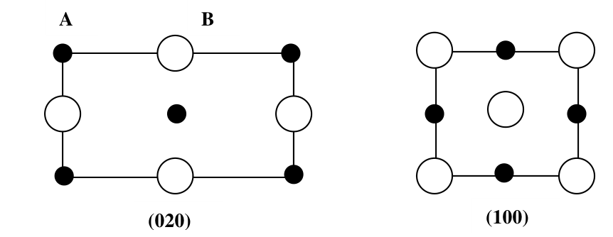

Topic 8: Solved Problems
Step-by-step solutions of all 7 problems of the official sheet on ceramic materials (Problems T8_CeramicMaterials: volume, packing factor and densities of zinc blende, perovskite and rock salt cells, and the crystal system, stoichiometry, density and structure of an AB-type ceramic read from two planes, from Session 16). The sheet prints a numeric key for every item, so each solution is derived here and compared with that key.
Problem 1
Problems T8_CeramicMaterials.pdf #1
Zinc blende · density and packing
Click to Collapse ▲
Zinc Blende (ZnS): Cell Volume, Density, Packing Factor, Linear and Planar Densities
Original statement · Problems T8_CeramicMaterials.pdf
1.- For the following Zinc Blende structure (ZnS) calculate: a) The volume of the unit cell and volumetric density expressed in g/cm³. b) The packing factor. c) The linear density (ions/mm) in the direction [111]. d) The planar density (ions/mm²) in the plane (111).
Data: r(Zn²⁺) = 0.060 nm; r(S²⁻) = 0.174 nm, M(Zn) = 63.54, M(S) = 32.06.
Hypotheses
- Structure. S²⁻ on the FCC lattice points, Zn²⁺ in half of the tetrahedral sites; 4 Zn²⁺ and 4 S²⁻ per cubic cell [Session 16 Slide 9]. The radius ratio $0.060/0.174 = 0.345$ is in the tetrahedral range 0.225-0.414 [Session 16 Slide 6].
- Hard spheres in contact. The cation touches the anions of its tetrahedron. A tetrahedral site lies at $(\frac14,\frac14,\frac14)$, a quarter of the body diagonal from the corner, so the contact is along the body diagonal: $a\sqrt3/4 = r_{Zn} + r_S$ (extension of Slide 9, the geometry of the cell).
- Density of a cell (from Topic 2): $\rho = nM/(V N_A)$, with $N_A = 6.022\times10^{23}$ mol⁻¹ (not printed on this item of the sheet).
- Counting. A direction counts the ions whose centres lie on it, a plane the ions whose centres lie in it, with the fractions that belong to the segment or area of the cell.
Data
| Quantity | Symbol | Value |
|---|---|---|
| Radius of Zn²⁺ | $r_{Zn}$ | 0.060 nm |
| Radius of S²⁻ | $r_S$ | 0.174 nm |
| Atomic masses | $M_{Zn},\ M_S$ | 63.54, 32.06 g/mol |
| Formula units per cell | $n$ | 4 |
Unknowns: $V$ and $\rho$; $f$; $\rho_L[111]$; $\rho_P(111)$.
The edge $a$ comes from the contact along the body diagonal; every other quantity is a count of ions divided by a volume, a length or an area of the cell.
Strategy.
- Lattice parameter from $a\sqrt3/4 = r_{Zn} + r_S$, then $V = a^3$.
- Density $\rho = 4(M_{Zn} + M_S)/(V N_A)$.
- Packing factor $f = 4(V_{Zn} + V_S)/V$.
- Count the ions on the body diagonal and in the (111) triangle.
1. Lattice parameter and volume
using $1\ \text{nm} = 10^{-7}$ cm, so $1\ \text{nm}^3 = 10^{-21}$ cm³.
2. Volumetric density
Mass of the four formula units of the cell:
3. Packing factor
Volume of each ion, $V_{ion} = \frac43\pi r^3$:
4. Linear density along [111]
The body diagonal runs from $(0,0,0)$ to $(1,1,1)$, length $a\sqrt3 = 0.936$ nm. On it lie S²⁻ at both corners (each shared with the next diagonal, $2\times\frac12 = 1$) and Zn²⁺ at $(\frac14,\frac14,\frac14)$ (1); the site $(\frac34,\frac34,\frac34)$ belongs to the empty half of the tetrahedral sites. So 2 ions per diagonal:
with $1\ \text{mm} = 10^{6}$ nm.
5. Planar density in (111)
The (111) plane cuts the cell in the equilateral triangle with vertices $(1,0,0)$, $(0,1,0)$, $(0,0,1)$, of side $a\sqrt2$ and area
The S²⁻ ions in it are the three corners, each contributing $\frac16$ of its area (the 60° angle of the triangle), and the three face centres on its sides, each $\frac12$: $3\times\frac16 + 3\times\frac12 = 2$. No Zn²⁺ lies in it (their positions have $x+y+z = \frac34$ or $\frac74$, not 1).
with $1\ \text{mm}^2 = 10^{12}$ nm².
Checks
- Units. $\rho = [\text{g/mol}]/([\text{mol}^{-1}][\text{cm}^3]) = \text{g/cm}^3$; $f$ = nm³/nm³, dimensionless; ions per length and per area.
- Anions do not overlap. The nearest S²⁻ ions are half a face diagonal apart, $a\sqrt2/2 = 0.382$ nm, more than $2r_S = 0.348$ nm, so the cation-anion contact is the one that sets $a$.
- Packing. $f = 0.58$ is below the 0.74 of an FCC metal: the tetrahedral cation is small and fills little of the space between the anions, as expected for an open, covalent-like structure.
- Density. 4.02 g/cm³ is close to the measured density of sphalerite (about 4.1 g/cm³, extension).
Interpretation
The body diagonal is the close-contact direction of zinc blende, so it alternates S-Zn-gap-S; the (111) plane holds only the anions, the close-packed layer of the FCC sulfur lattice, with the cations between layers. That layering is why the (111) planar density equals that of an FCC packing of S²⁻ ions alone.
Check against the official solution
| Item | Official | Computed | Comment |
|---|---|---|---|
| $V$ | $1.57\times10^{-22}$ cm³ | $1.578\times10^{-22}$ cm³ | agrees |
| $\rho_v$ | 4.04 g/cm³ | 4.02 g/cm³ | the key divides by the rounded $V = 1.57\times10^{-22}$ cm³ (382.40/(6.022e23 × 1.57e-22) = 4.04) |
| $f$ | 0.585 | 0.582 | same rounding: 0.091887/0.157 = 0.585 |
| $\rho_L[111]$ | $2.13\times10^{6}$ ions/mm | $2.14\times10^{6}$ ions/mm | agrees (2.137) |
| $\rho_P(111)$ | $7.92\times10^{12}$ ions/mm² | $7.91\times10^{12}$ ions/mm² | agrees |
Problem 2
Problems T8_CeramicMaterials.pdf #2
Perovskite CaTiO₃ · densities
Click to Collapse ▲
Perovskite (CaTiO₃): Cell Volume, Packing Factor, Linear, Planar and Volumetric Densities
Original statement · Problems T8_CeramicMaterials.pdf
2- The Perovskite structure (CaTiO₃) can be described as an FCC packing of Ca²⁺ and O²⁻ ions on which Ti⁴⁺ occupies ¼ of the octahedral sites. Calculate: a) The volume of the unit cell. b) The packing factor. c) The linear density (ions/nm) in the direction [111]. d) The planar density (ions/nm²) in the plane (111). e) The volumetric density expressed in g/cm³.
Data: r(Ca²⁺) = 0.106 nm; r(O²⁻) = 0.132 nm; r(Ti⁴⁺) = 0.036 nm; M(Ca) = 40.08; M(O) = 16.00; M(Ti) = 47.90.
The sheet prints "O² ions⁻" for O²⁻ ions.
Hypotheses
- Structure. Ca²⁺ at the corners and O²⁻ at the face centres form together an FCC packing; Ti⁴⁺ sits in the octahedral site at the body centre, the only one of the four octahedral sites surrounded by six O²⁻. Per cell: 1 Ca²⁺, 3 O²⁻, 1 Ti⁴⁺ [Session 16 Slide 12].
- Contact. In a close packing the spheres touch along the face diagonal, here a Ca²⁺ at a corner and the O²⁻ at the centre of the face: $a\sqrt2 = 2(r_{Ca} + r_O)$ [Session 16 Slide 12, FCC packing of Ca²⁺ and O²⁻].
- Density: $\rho = \sum M/(V N_A)$, $N_A = 6.022\times10^{23}$ mol⁻¹ (Topic 2).
Data
| Quantity | Value |
|---|---|
| $r_{Ca}$, $r_O$, $r_{Ti}$ | 0.106, 0.132, 0.036 nm |
| $M_{Ca}$, $M_O$, $M_{Ti}$ | 40.08, 16.00, 47.90 g/mol |
Unknowns: $V$, $f$, $\rho_L[111]$, $\rho_P(111)$, $\rho_v$.
- Edge from the Ca-O contact along the face diagonal; check that Ti⁴⁺ fits its octahedral hole.
- Packing factor with the five ions of the cell.
- Count the ions on the body diagonal and in the (111) triangle.
- Density with one formula unit per cell.
1. Lattice parameter and volume
Fit of Ti⁴⁺: along the edge direction the body-centre site is $a/2$ from the O²⁻ of each face centre, $a/2 = 0.16829$ nm, against $r_{Ti} + r_O = 0.036 + 0.132 = 0.168$ nm. The cation just touches the six oxygens, so the cell is consistent.
2. Packing factor
3. Linear density along [111]
Body diagonal, length $a\sqrt3 = 0.33658\times1.7321 = 0.58298$ nm. On it: Ca²⁺ at both corners ($2\times\frac12 = 1$) and Ti⁴⁺ at the body centre (1). The O²⁻ ions sit at face centres, off the diagonal.
4. Planar density in (111)
Triangle $(1,0,0)$, $(0,1,0)$, $(0,0,1)$, of area $\frac{\sqrt3}{2}a^2 = 0.8660\times0.11329\ \text{nm}^2 = 0.098110$ nm². In it: Ca²⁺ at the three vertices ($3\times\frac16 = \frac12$) and O²⁻ at the three face centres on its sides, $(\frac12,\frac12,0)$ and the like ($3\times\frac12 = \frac32$). Ti⁴⁺ at $(\frac12,\frac12,\frac12)$ has $x+y+z = \frac32$ and lies outside. Total 2 ions:
5. Volumetric density
Checks
- Units. nm³ for $V$; $f$ dimensionless; ions/nm and ions/nm²; g/cm³ with $1\ \text{nm}^3 = 10^{-21}$ cm³.
- Charge balance. $+2 + 4 + 3\times(-2) = 0$ per cell.
- Packing. $f = 0.894$ is above the 0.74 of an FCC metal. It can be, because the Ti⁴⁺ ion fills an octahedral hole of the close packing of Ca²⁺ and O²⁻, which a metal leaves empty. The sum is a hard-sphere estimate: the Ca²⁺ ion is smaller than O²⁻, so the "close packing" of the two is itself an approximation.
- Two contacts at once. Both the Ca-O contact ($a = 0.3366$ nm) and the Ti-O contact ($a = 2\times0.168 = 0.336$ nm) give nearly the same edge, so the data describe an ideal perovskite.
Interpretation
The large Ca²⁺ and the O²⁻ ions build the frame together, and the small, highly charged Ti⁴⁺ sits in the octahedron of oxygens at the centre; the same corner-sharing TiO₆ octahedra are those of Slide 12. The (111) planes hold Ca and O (composition CaO₃ per layer when extended), and the Ti⁴⁺ ions lie between them.
Check against the official solution
| Item | Official | Computed | Comment |
|---|---|---|---|
| $V$ | 0.038 nm³ | 0.0381 nm³ | agrees |
| $f$ | 0.897 | 0.894 | the key divides by the rounded $V = 0.038$ nm³ (0.034087/0.038 = 0.897) |
| $\rho_L[111]$ | 3.44 ions/nm | 3.43 ions/nm | agrees within rounding (3.431) |
| $\rho_P(111)$ | 20.4 ions/nm² | 20.4 ions/nm² | agrees |
| $\rho_v$ | 5.95 g/cm³ | 5.92 g/cm³ | 0.5 % apart; with the rounded $V = 0.038$ nm³ the density is 5.94 g/cm³, so the key rounds an intermediate value |
Problem 3
Problems T8_CeramicMaterials.pdf #3
Two planes · orthorhombic perovskite
Click to Collapse ▲
Crystal System, Stoichiometry, Density and Structure of an AxByCz Ceramic from Two Planes
Original statement · Problems T8_CeramicMaterials.pdf
3.- In the figure, two crystallographic planes are represented. They correspond to a unit cell of a ceramic material with the following formula AxByCz. Determine: a) The crystalline system they belong to b) The stoichiometry and density (g/cm³) c) The structure type and the description of the structure in terms of the closed packing sequence.
Data: M(A) = 40 g/mol, M(B) = 48 g/mol, M(C) = 16 g/mol.

The sheet prints "AxByCz.." with a double full stop.
Hypotheses
- Reading of the figure. In the (100) plane: A ions (large, dotted) at the four corners and one C ion (open circle) at the centre; edges 0.387 nm (horizontal) and 0.383 nm (vertical). In the (110) plane: A at the four corners, C at the middle of the two long edges, one small B ion at the centre; edges 0.546 nm (horizontal) and 0.383 nm (vertical). The identification of the circles is read from the labels of the figure.
- Axes. The (100) plane is the face $x = 0$, spanned by $b$ and $c$, so $b = 0.387$ nm and $c = 0.383$ nm. The (110) plane is the diagonal plane, spanned by the face diagonal $\sqrt{a^2 + b^2}$ of the base and by $c$; its vertical edge is again $c = 0.383$ nm, the same as in (100), which confirms the reading.
- Counting. Corner $\frac18$, face $\frac12$, interior 1 (the rules of Topic 2); $\rho = \sum M/(V N_A)$ with $N_A = 6.022\times10^{23}$ mol⁻¹.
Data
| Quantity | Value |
|---|---|
| (100) plane | $b = 0.387$ nm, $c = 0.383$ nm |
| (110) plane | $\sqrt{a^2 + b^2} = 0.546$ nm, $c = 0.383$ nm |
| $M_A$, $M_B$, $M_C$ | 40, 48, 16 g/mol |
Unknowns: crystal system; formula and $\rho$; structure type and stacking.
- Solve the face diagonal for $a$ and compare the three edges.
- Place every ion of the two planes in the cell and count.
- Compare the arrangement with the perovskite of Slide 12 of Session 16.
1. Crystal system
From the diagonal of the base, by Pythagoras in the right triangle with legs $a$ and $b$ and hypotenuse 0.546 nm:
The three edges $a = 0.385$ nm, $b = 0.387$ nm and $c = 0.383$ nm are all different, and the planes drawn are rectangles, so the axes are at right angles: three unequal edges at 90° is the orthorhombic system. A cube with $a = b = 0.387$ nm would need a diagonal $0.387\sqrt2 = 0.547$ nm; the printed 0.546 nm and the two different vertical and horizontal edges of (100) rule that out.
2. Positions and stoichiometry
- A: at the corners of both planes, hence at the 8 corners of the cell: $8\times\frac18 = 1$.
- C: at the centre of the face (100), and at the middle of the long edges of (110). Those points of the diagonal plane are $(\frac12,\frac12,0)$ and $(\frac12,\frac12,1)$, the centres of the bottom and top faces. So C occupies the centres of all six faces: $6\times\frac12 = 3$.
- B: at the centre of (110), the point $(\frac12,\frac12,\frac12)$, the body centre: 1.
3. Density
4. Structure type and close-packing description
The arrangement is that of the perovskite of Slide 12: A at the corners, C at the face centres, B at the body centre [Session 16 Slide 12]. The masses match CaTiO₃ (Ca 40, Ti 48, O 16), with A = Ca²⁺, B = Ti⁴⁺ and C = O²⁻.
- Close packing: the A and C ions together (corners plus face centres) form a cubic close packing, the FCC arrangement, here slightly distorted into an orthorhombic cell. Along the body diagonal [111] the close-packed layers, each of composition AC₃, follow the sequence ABCABC... of the FCC packing.
- Interstitial: B fills ¼ of the octahedral sites of that packing, the one at the body centre, surrounded by six C ions (C.I. 6); A has C.I. 12.
Perovskite-type structure, ABC₃, with an orthorhombic distortion of the ideal cube.
Checks
- Units. nm³ to cm³ with $10^{-21}$; g/mol over mol⁻¹ gives g.
- Charge balance with A²⁺, B⁴⁺, C²⁻: $+2 + 4 - 3\times2 = 0$.
- Limit of the cubic cell. As $a, b, c \to 0.387$ nm the cell becomes the cubic perovskite and the density changes only slightly (to 3.89 g/cm³ for $a = b = c = 0.387$ nm, extension), so the distortion is small: the edges differ by about 1 %.
Interpretation
Two planes are enough to fix a cell when they show all the ions: the face (100) gives two edges and the face centres, the diagonal plane (110) gives the third edge and the body centre. The distortion of real perovskites from the cube is common (CaTiO₃ itself is orthorhombic, extension), and it is what the three slightly different edges of the figure express.
Check against the official solution
| Item | Official | Computed | Comment |
|---|---|---|---|
| Crystal system | orthorhombic | orthorhombic ($a = 0.385$, $b = 0.387$, $c = 0.383$ nm) | agrees |
| Stoichiometry | ABC₃ | ABC₃ | agrees |
| Density | 3.96 g/cm³ | 3.96 g/cm³ | agrees |
| Structure | perovskite-type | perovskite: AC₃ close packing ABCABC, B in ¼ of the octahedral sites | agrees; the stacking description is not printed in the key |
Problem 4
Problems T8_CeramicMaterials.pdf #4
Two planes · fluorite AB₂
Click to Collapse ▲
Fluorite-Type AxBy Ceramic from Two Planes: Structure, Stoichiometry, Density and Packing Factor
Original statement · Problems T8_CeramicMaterials.pdf, p. 2
4.- In the figure, two crystallographic planes are represented. They correspond to a cubic unit cell of a ceramic material with the following formula AxBy. Determine. a) The structure type and its description b) The stoichiometry of the compound c) The density expressed in g/cm³ d) The packing factor
Data: M(A) = 238 g/mol, M(B) = 16 g/mol, r(A) = 0.105 nm, r(B) = 0.132 nm.

On the sheet each key is printed after its own item; they are collected here in one line.
Hypotheses
- Reading of the figure. (100) plane: a square of edge 0.547 nm with A ions (open circles) at the corners and at the centre (the diagonal line joins a corner, the centre and the opposite corner). (110) plane: a rectangle $a\sqrt2$ wide and $a$ high, with A at the four corners and at the middle of the two long edges, and four B ions (black) inside, at a quarter and three quarters of the width and of the height. The cell is cubic (statement), $a = 0.547$ nm.
- Counting of Topic 2; $\rho = nM/(V N_A)$ with $N_A = 6.022\times10^{23}$ mol⁻¹.
Data
| Quantity | Value |
|---|---|
| Edge | $a = 0.547$ nm |
| $M_A$, $M_B$ | 238, 16 g/mol |
| $r_A$, $r_B$ | 0.105, 0.132 nm |
Unknowns: structure; formula; $\rho$; $f$.
- Turn the points of the two planes into positions in the cell.
- Count the ions and compare with the structures of Slides 10-11 of Session 16.
- Density and packing factor with the counted ions.
1. Positions
- A in (100): corners and the centre of the face, $(0,\frac12,\frac12)$. Since the cell is cubic the same holds for every face: A sits at the corners and at all the face centres, the FCC lattice points.
- B in (110): the diagonal plane contains the points $(t, t, z)$. Its width is the face diagonal, so a point at a quarter of the width has $t = \frac14$, and at three quarters $t = \frac34$. The four B ions are therefore at $(\frac14,\frac14,\frac14)$, $(\frac14,\frac14,\frac34)$, $(\frac34,\frac34,\frac14)$ and $(\frac34,\frac34,\frac34)$: these are tetrahedral sites of the FCC cell. The (110) plane shows four of them; the other plane through the cell, (1̄10), shows the other four, and the sheet labels the figure (110)/(1̄10). B therefore fills all eight tetrahedral sites.
- A in (110): the corners and $(\frac12,\frac12,0)$, $(\frac12,\frac12,1)$, the face centres of the bottom and top faces, consistent with the FCC lattice.
2. Structure type and stoichiometry
An FCC lattice of the cation with the anion in all the tetrahedral sites, 4 A and 8 B per cell, is the fluorite (CaF₂) type [Session 16 Slide 10]. With the masses, the compound is UO₂ (U 238, O 16), which Slide 10 lists among the fluorite oxides. The radius ratio agrees: $r_A/r_B = 0.105/0.132 = 0.795$, in the range 0.732-1.0 of coordination 8 for the cation [Session 16 Slide 6], and each B has 4 A neighbours.
3. Density
4. Packing factor
Checks
- Contact. A tetrahedral site is $a\sqrt3/4 = 0.547\times1.7321/4 = 0.2369$ nm from its corner ion, and $r_A + r_B = 0.237$ nm: the A-B pairs touch, so the edge of the figure is consistent with the radii.
- No overlap of like ions. B-B along the edge: $a/2 = 0.2735$ nm $> 2r_B = 0.264$ nm; A-A along the face diagonal: $a\sqrt2/2 = 0.387$ nm $> 2r_A = 0.210$ nm.
- Charge with A⁴⁺ and B²⁻ (U⁴⁺, O²⁻): $4\times4 - 8\times2 = 0$.
- Units as in the previous problems; $f$ dimensionless.
Interpretation
The heavy uranium ions make the density high (UO₂ is the nuclear fuel), while the packing factor is moderate: the anions are the large ions here, and the eight of them fill the tetrahedral holes of a cation lattice that is far from close-packed by itself.
Check against the official solution
| Item | Official | Computed | Comment |
|---|---|---|---|
| Structure | fluorite, FCC A, B in all tetrahedral sites | same | agrees |
| Stoichiometry | AB₂ | AB₂ | agrees |
| Density | 10.95 g/cm³ | 10.96 g/cm³ | agrees within rounding (10.958) |
| Packing factor | 0.589 | 0.589 | agrees |
Problem 5
Problems T8_CeramicMaterials.pdf #5
Two planes · rock salt AB
Click to Collapse ▲
Rock Salt AB Ceramic from Two Planes: Structure, Stoichiometry, Density and Packing Factor
Original statement · Problems T8_CeramicMaterials.pdf, p. 2
5.- In the figure, two crystallographic planes are represented. They correspond to a cubic unit cell of a ceramic material with the following formula AB. If the diagonal of the cube is 0.824 nm, determine. a) The structure type and its description. b) The stoichiometry of the compound. c) The density expressed in g/cm³. d) The packing factor.
Data: M(A) = 40 g/mol, M(B) = 16 g/mol, r(A) = 0.106 nm.

Hypotheses
- Reading of the figure. Plane (100): B ions (large open circles) at the corners and at the centre; A ions (small black) at the middles of the four edges. Plane (020), the plane parallel to (010) at half the edge ($y = a/2$): A at the corners and at the centre, B at the middles of the edges. The labels A (small black) and B (large open) are printed above the (020) plane.
- Diagonal of the cube. The diagonal of a cube is its body diagonal, $a\sqrt3$ (a face diagonal would be called so). Hence $a = 0.824/\sqrt3$ nm.
- Contact. The radius of B is not given; in the rock salt structure cation and anion touch along the edge, $a = 2(r_A + r_B)$, which gives it [Session 16 Slide 8].
- $\rho = nM/(V N_A)$ with $N_A = 6.022\times10^{23}$ mol⁻¹ (Topic 2).
Data
| Quantity | Value |
|---|---|
| Body diagonal | 0.824 nm |
| $M_A$, $M_B$ | 40, 16 g/mol |
| $r_A$ | 0.106 nm |
Unknowns: structure; formula; $\rho$; $f$.
- Positions from the two planes; count; compare with Slide 8 of Session 16.
- Edge from the body diagonal, then $\rho$.
- $r_B$ from the edge contact, then $f$.
1. Positions and structure type
- B in (100) at the corners and the face centre: B occupies the corners and face centres of the cell, an FCC lattice.
- A in (100) at the edge midpoints, $(0,\frac12,0)$ and the like, and A in (020) at the corners of that mid-plane, $(0,\frac12,0)$, $(1,\frac12,0)$, ..., which are again edge midpoints, and at its centre, $(\frac12,\frac12,\frac12)$, the body centre. The edge midpoints and the body centre are the octahedral sites of the FCC cell, and A fills all of them.
- B in (020) at the middles of the edges of the mid-plane, $(\frac12,\frac12,0)$ and $(0,\frac12,\frac12)$ and the like: face centres, consistent with the FCC lattice of B.
An FCC lattice of one ion with the other in all the octahedral sites is the rock salt (NaCl) type [Session 16 Slide 8]. With the masses the compound is CaO (Ca 40, O 16), one of the oxides that Slide 8 lists, with A = Ca²⁺ and B = O²⁻.
2. Stoichiometry
3. Density
4. Radius of B and packing factor
From the contact along the edge:
Checks
- Reading of the diagonal. With the face diagonal instead, $a = 0.824/\sqrt2 = 0.583$ nm and the density would be 1.88 g/cm³, half of the key and far below any oxide of calcium; the body diagonal is the consistent reading.
- Radius ratio. $r_A/r_B = 0.106/0.132 = 0.80$, which lies in the range 0.732-1.0 of Slide 6 (coordination 8), not in the octahedral range. The figure, the formula AB and the key all say NaCl type, so the structure is taken from the figure; the radius-ratio rule is a guide, not a law (extension, the same happens for real CaO, which is rock salt).
- No anion overlap. B-B along the face diagonal: $a\sqrt2/2 = 0.336$ nm $> 2r_B = 0.264$ nm.
- Units as in the previous problems.
Interpretation
The same two planes describe the cell completely: (100) shows the face of the cell, (020) the mid-plane, and together they place an ion of each kind at every point of a simple cubic grid of step $a/2$, alternating A and B, which is the rock salt structure seen from the side. The derived $r_B = 0.132$ nm is the radius of O²⁻ used in the other problems of the sheet.
Check against the official solution
| Item | Official | Computed | Comment |
|---|---|---|---|
| Structure | NaCl type | NaCl (rock salt), B FCC, A in all octahedral sites | agrees |
| Stoichiometry | AB | AB | agrees |
| Density | 3.45 g/cm³ | 3.45 g/cm³ | agrees, with $a = 0.824/\sqrt3$ nm (body diagonal) |
| Packing factor | 0.54 | 0.542 | agrees |
Problem 6
Problems T8_CeramicMaterials.pdf #6
Perovskite SrSnO₃ · rod mass
Click to Collapse ▲
Perovskite SrSnO₃: Linear and Planar Densities and the Mass of a Rod
Original statement · Problems T8_CeramicMaterials.pdf, p. 3
6.-The compound SrSnO₃ has a perovskite structure, with Sn⁴⁺ occupying the octahedral interstitial position at the center of the cube. DATA: Atomic masses: O = 16, Sr = 87.6, Sn = 118.7; Ionic radii: O⁻² = 0,146 nm, Sn⁺⁴ = 0,071nm, Sr⁺² = 0,113nm. Calculate: a) The linear density in ions/nm along the [101] direction b) The surface density in ions/nm² in the (101) plane c) The mass of a cylindrical rod with a 5 mm radius and a 10 mm length
Hypotheses
- Structure. Sr²⁺ at the corners, O²⁻ at the face centres, Sn⁴⁺ at the body centre (the octahedral site); 1 Sr, 3 O and 1 Sn per cell [Session 16 Slide 12].
- Hard spheres. The edge $a$ is set by the pair of ions that touch. Two contacts are possible: Sn⁴⁺ with its six O²⁻ along the edge direction, $a = 2(r_{Sn} + r_O)$, and Sr²⁺ with O²⁻ along the face diagonal, $a\sqrt2 = 2(r_{Sr} + r_O)$, the "FCC packing of A and O" of Slide 12. The real edge is the larger of the two: with the smaller one the other pair of spheres would overlap.
- $\rho = \sum M/(V N_A)$ with $N_A = 6.022\times10^{23}$ mol⁻¹ (Topic 2); the rod is a solid cylinder, $V = \pi R^2 L$, with no porosity.
Data
| Quantity | Value |
|---|---|
| $r_O$, $r_{Sn}$, $r_{Sr}$ | 0.146, 0.071, 0.113 nm |
| $M_O$, $M_{Sr}$, $M_{Sn}$ | 16, 87.6, 118.7 g/mol |
| Rod | $R = 5$ mm, $L = 10$ mm |
Unknowns: $\rho_L[101]$, $\rho_P(101)$, $m$.
- Compute both contact edges and keep the one that leaves no overlap.
- Count the ions on the face diagonal [101] and in the plane (101).
- Density of the cell, then the mass of the rod.
1. Lattice parameter
Sn-O contact along the edge:
Sr-O contact along the face diagonal:
With $a_2$ the Sn⁴⁺ ion would be $a_2/2 = 0.183$ nm from its oxygens, less than $r_{Sn} + r_O = 0.217$ nm: the spheres would overlap by 0.034 nm. With $a_1$ the Sr-O distance is $a_1\sqrt2/2 = 0.307$ nm, more than $r_{Sr} + r_O = 0.259$ nm: no overlap. The cell is fixed by the Sn-O contact:
2. Linear density along [101]
The direction [101] is the diagonal of the face $y = 0$, from $(0,0,0)$ to $(1,0,1)$, of length $a\sqrt2 = 0.434\times1.4142 = 0.61377$ nm. On it: Sr²⁺ at both corners ($2\times\frac12 = 1$) and O²⁻ at the centre of the face, $(\frac12,0,\frac12)$ (1). Two ions:
3. Planar density in (101)
The plane (101) of the cell, $x + z = 1$, is the rectangle with corners $(1,0,0)$, $(0,0,1)$, $(1,1,0)$, $(0,1,1)$: one side is the face diagonal $a\sqrt2$, the other the edge $a$, so its area is
Ions in it: Sr²⁺ at the four corners ($4\times\frac14 = 1$); O²⁻ at $(\frac12,0,\frac12)$ and $(\frac12,1,\frac12)$, the midpoints of the two long sides ($2\times\frac12 = 1$); Sn⁴⁺ at $(\frac12,\frac12,\frac12)$, the centre (1). The other face centres have $x + z = \frac12$ or $\frac32$ and lie outside. Three ions:
4. Mass of the rod
Density of the cell:
Volume of the rod, with $R = 0.5$ cm and $L = 1.0$ cm:
5. The edge of the key
The key corresponds to the second edge, $a_2 = 0.36628$ nm (Sr-O contact):
The key (3.86 ions/nm, 15.87 ions/nm², 6.76 g) takes the edge from the Sr-O contact along the face diagonal, $a = 0.366$ nm, the rule used in Problem 2 for CaTiO₃. With the radii of this problem that cell is too small for the Sn⁴⁺ ion: the body-centre site leaves $a/2 - r_O = 0.183 - 0.146 = 0.037$ nm for a cation of radius 0.071 nm, so Sn-O would overlap by 0.034 nm. In CaTiO₃ the two contacts happened to give the same edge (0.3366 and 0.336 nm, Problem T8-02), which is why the rule worked there. The hard-sphere cell that respects every radius is $a = 2(r_{Sn} + r_O) = 0.434$ nm, and it gives 3.26 ions/nm, 11.26 ions/nm² and 4.06 g. The computed values are kept; the key's values are reproduced in step 5 for comparison. (The key's 15.87 is also slightly above the 15.81 of its own edge, a rounding of $a$.)
Checks
- Units. ions/nm, ions/nm²; $[\rho V] = (\text{g/cm}^3)(\text{cm}^3) = \text{g}$; 5 mm = 0.5 cm, 10 mm = 1.0 cm.
- Radius ratio. $r_{Sn}/r_O = 0.071/0.146 = 0.486$, inside the octahedral range 0.414-0.732 of Slide 6: the cation is larger than the minimum for its hole, so it touches its anions and pushes them apart, which is exactly the Sn-O contact used here.
- Charge. $+2 + 4 - 3\times2 = 0$.
- Order of magnitude. The measured edge of SrSnO₃ is about 0.403 nm (extension), between the two hard-sphere edges; real ions are not hard spheres, and these radii are not those of a single consistent table.
Interpretation
In a perovskite the B cation sits in the octahedron of oxygens and the A cation in the twelve-fold hole between octahedra. Which contact sets the cell depends on the sizes (the tolerance of the perovskite structure, an extension): here the B-O contact dominates, the A cation rattles in a hole a little too large for it, and the cell is larger and lighter than the key assumes.
Check against the official solution
| Item | Official | Computed | Comment |
|---|---|---|---|
| $\rho_L[101]$ | 3.86 ions/nm | 3.26 ions/nm | key uses $a = 0.366$ nm (Sr-O contact), which overlaps Sn-O; see the warning |
| $\rho_P(101)$ | 15.87 ions/nm² | 11.26 ions/nm² | same cause (15.81 with the key's edge) |
| $m$ | 6.76 g | 4.06 g | same cause (6.75 g with the key's edge) |
Problem 7
Problems T8_CeramicMaterials.pdf #7
MgO rock salt · densities
Click to Collapse ▲
MgO (Rock Salt): Cell Volume, Packing Factor, Linear, Planar and Volumetric Densities
Original statement · Problems T8_CeramicMaterials.pdf, p. 3
7- Considering that MgO crystallizes in a NaCl-type structure, determine: DATA: r(Mg²⁺) = 0,078 nm; r(O²⁻) = 0,132 nm; M(MgO) = 40 g/mol; $N_A$ = 6,023·10²³ átomos/mol a) The volume of the unit cell b) The packing factor c) The linear density (in ions/nm) in the [111] direction d) The planar density (in ions/nm²) in the (111) plane e) The volumetric density (in g/cm³)
The sheet prints the volume of the key as "V = 0.074nm", with the unit nm; a volume is in nm³. It writes Avogadro's number with decimal commas and in Spanish, "6,023·10²³ átomos/mol".
Hypotheses
- Structure. O²⁻ on the FCC lattice points, Mg²⁺ in all the octahedral sites (edge midpoints and body centre); 4 Mg²⁺ and 4 O²⁻ per cell [Session 16 Slide 8]. The ratio $r_{Mg}/r_O = 0.078/0.132 = 0.591$ is in the octahedral range 0.414-0.732 [Session 16 Slide 6].
- Contact of cation and anion along the edge: $a = 2(r_{Mg} + r_O)$.
- $\rho = 4M_{MgO}/(V N_A)$ with the $N_A = 6.023\times10^{23}$ mol⁻¹ of the sheet.
Data
| Quantity | Value |
|---|---|
| $r_{Mg}$, $r_O$ | 0.078, 0.132 nm |
| $M_{MgO}$ | 40 g/mol |
| $N_A$ | $6.023\times10^{23}$ mol⁻¹ |
Unknowns: $V$, $f$, $\rho_L[111]$, $\rho_P(111)$, $\rho_v$.
Edge from the contact; packing factor with 4 + 4 ions; count the ions on the body diagonal and in the (111) triangle; density with four formula units.
1. Volume of the cell
2. Packing factor
3. Linear density along [111]
Body diagonal, length $a\sqrt3 = 0.420\times1.7321 = 0.72746$ nm. On it: O²⁻ at the two corners ($2\times\frac12 = 1$) and Mg²⁺ at the body centre (1). Two ions:
4. Planar density in (111)
Triangle $(1,0,0)$, $(0,1,0)$, $(0,0,1)$, of area $\frac{\sqrt3}{2}a^2 = 0.8660\times(0.420\ \text{nm})^2 = 0.15277$ nm². It holds only O²⁻: three corners ($3\times\frac16$) and three face centres ($3\times\frac12$), 2 ions. The Mg²⁺ ions at the edge midpoints, such as $(\frac12,0,0)$, have $x+y+z = \frac12$, and the body centre $\frac32$: they lie in the parallel planes between the oxygen layers.
5. Volumetric density
Checks
- No anion overlap. O-O along the face diagonal: $a\sqrt2/2 = 0.297$ nm $> 2r_O = 0.264$ nm, so the Mg-O contact sets the edge.
- Units. nm³; dimensionless $f$; ions/nm, ions/nm²; g/cm³ with $1\ \text{nm}^3 = 10^{-21}$ cm³.
- Physical value. 3.59 g/cm³ is the known density of periclase, MgO (about 3.58 g/cm³, extension).
Interpretation
Rock salt is two interpenetrating FCC lattices, one of each ion, shifted by half an edge. Along the body diagonal the ions alternate O-Mg-O-Mg at steps of $a\sqrt3/2$, and the (111) planes are alternately all-oxygen and all-magnesium layers, which is why a (111) plane of the cell contains a single kind of ion.
Check against the official solution
| Item | Official | Computed | Comment |
|---|---|---|---|
| $V$ | 0.074 (printed in nm) | 0.0741 nm³ | agrees; the unit of the key should read nm³ |
| $f$ | 0.63 | 0.627 | agrees |
| $\rho_L[111]$ | 2.75 ions/nm | 2.75 ions/nm | agrees |
| $\rho_P(111)$ | 13.1 ions/nm² | 13.1 ions/nm² | agrees |
| $\rho_v$ | 3.59 g/cm³ | 3.59 g/cm³ | agrees |